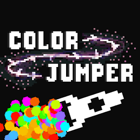
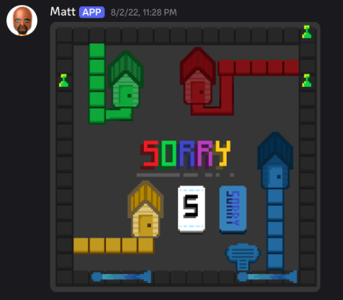

Color Jumper
Developing an Android and iOS video game, where the player
switches colors and jumps to blocks to stay alive.
Made with Godot and GDScript.

Discord Bot: Matt
Recreated Sorry! board game in Discord, complete with automated turn
verification and thorough Discord integration.
Used Pillow library to generate on-the-fly images of the current
board based on the game state.
Stored game state and other variables from all the features of the
bot in a sqlite database with SQL injection prevention.
Accessed external API for song quotes and random trivia.
And much more!